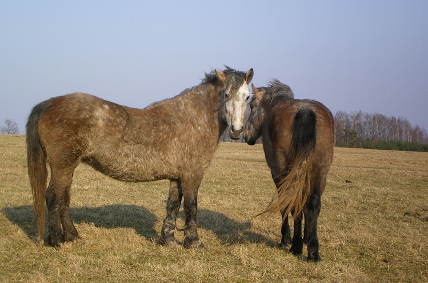
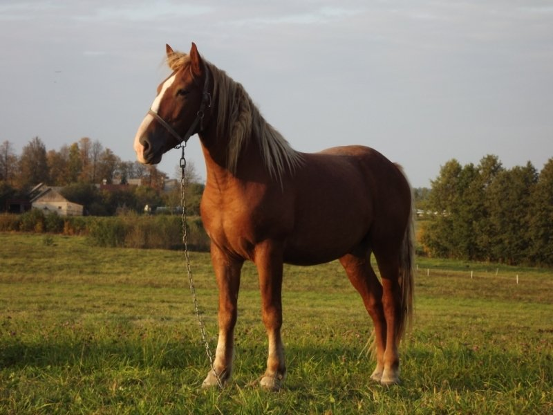

Arklių ligos ir mityba - Arkliai
- Arkliai - xszaislai.lt
arkliai gera kaina internetu. Didelis prekių pasirinkimas, saugus pirkimas, prekių pristatymas į namus ar biurą. Įsigykite prekes internetu pigiau. - 10 įdomių faktų apie arklius, kurių galbūt nežinojote: kuo ...
1970-aisiais buvo pastebėta, kad grynakraujai fryzų arkliai, besivaržantys kinkinių varžybose, prarado dalį savo ištvermės, tad Nyderlandų veisėjas Jurgen Hillner juos ėmė kryžminti su arabų žirgais, pasižyminčiais puikiomis darbinėmis savybėmis. - arkliai - LRT
Asociacija vienija Lietuvos sunkiųjų ir stambiųjų žemaitukų arklių augintojus. įkurta 1997-08-04, asociacijos prezidentas, Vigantas Indrašius, asociacijos administratorius Agnė Indrašienė - Apie arklius - Arkliai
Arkliai būna labai įvairių dydžių – nuo mažiausio pasaulio arklio Falabela, kurio aukštis ties gogu tesiekia 76 cm, iki didžiausio iš visų veislių šairo. Šairo eržilas turi būti ... - Arkliai, žirgai skelbimai | Plius.lt
Arkliai, žirgai (181) + Įdėti skelbimą Įsiminti skelbimai (0) Skelbimų: 181 . Atnaujinti viršuje. Naujausi viršuje Atnaujinti viršuje Pigiausi viršuje Brangiausi viršuje. Skuodo r. rugsėjo 1 d. 2. Perkame arklius . Įmonė nuolat superka įvairaus įmitimo arklius, moka PVM. ... - Pradinis puslapis - Arkliai.com
Pries mūsų akis dainuojantys arkliai! Tiesa, šios dainis ritmą gali parinkti tu pati. Pirmasis arkliukas dainuoja "bum čiči bum" ir yra labai mielas. Antrasis arklys turi storą balsą ir dainuoja "baaammmm bammmmmmm" kas suteikia jam žavumo. Trečiasis tai jau turbūt ne arklys, o kumelė, nes turi ploną balselį ir dainuoja "uuuu uuuu ... - Arkliai, žirgai flora, fauna - Skelbiu.lt
Antrą gyvenimo šansą gavę arkliai mėgaujasi gyvenimu: čia išnaudoja ne juos, o jie. 55. 246. Labas rytas, Lietuva 2020.06.25 07:37. Labas rytas, Lietuva I d. Arklių slėnyje – antras šansas nebereikalingiems gyvūnams: čia jie gali elgtis kaip nori. 246. 20:59. 147. - Įdomybės apie arklį - Arklio muziejus
Ar žinote kokia arklio galia (AG) yra lygi kiek kilovatų (ag kw ar kw ag)? Kilovatai į arklio galios skaičiuoklė - atsakymai čia.. - Arabo-Fryzas - Arkliai.com
Kai arkliai stovi ant labai šlapių grindų arba ganosi drėgnose ganyklose, gali prasidėti kanopos varlės puvimas. Jos grioveliuose susirenka šlapia, dvokianti gelsvai balta masė. Jei laiku nepašalinamos priežastys ir negydoma, gali išsivystyti kanopos vėžys. Varlę reikia gerai nuvalyti, pašalinti nešvarumus, į griovelius ... - arkliai žaidimai - žaisti nemokamai žaidimas žaidimas
Arkliai.com. 1 month ago . Karys su savo žirgu - kliūtinio jojimo pionieriai - šoka per griovį. ... See More See Less. Photo. View on Facebook
Arkliai Pagrindinis Apie arklius Arklių ligos ir mityba Jojimo ir apsauginiai arklio reikmenys Arklių papuošalai ir šukuosenos Foto Kontaktai ir komentarai Idomybės ir įvairovės Forumas Video apie arklius Blogas apie arklius Anekdotai apie arklius,kumeles ir žirgus Dažniausios arklių ligos
Diegliai - Labai dažnas arklių susirgimas ir neretai jis baigiasi mirtimi. Kokių tipų diegliai būna, kas juos sukelia. Kaip juos atpažinti ir ką daryti sudiegliavus arkliui.
Elgsenos sutrikimai - Savo šonų kandžiojimas, lingavimas, vaikščiojimas garde – tai ne „blogi įpročiai“, o elgsenos sutrikimai, atsiradę dėl nuobodulio, sudirgimo ir streso. Analizuodami iki šiol atliktų mokslinių tyrimų rezultatus, pabandysime suvokti tokios žirgų elgsenos priežastis.
Svarbus faktas Arklio sveikata labai priklauso nuo šėrimo, priežiūros ir jo naudojimo. Arklių užkrečiamas ligas sukelia bakterijos, virusai, mikroskopiniai grybai arba jų nuodingos (toksinės) medžiagos bei parazitai. Dažniau arkliai serga neužkrečiamomis ligomis.
Arklių ligos ir jų profilaktika Kai arklių viršutiniai ir apatiniai krūminiai dantys nevienodai trinasi, jų kraštai tampa aštrūs ir žaloja snukio gleivinę, liežuvį. Tokie arkliai sunkiai kramto ir nenuryja pašaro. Aštrius dantų kraštus veterinarijos specialistai nubrūžina specialiu įrankiu.
Arkliams didelį skausmą sukelia dantų gilusis kariesas (danties irimas). Skaudama žandikaulio puse jis visai nekramto pašaro, labai lėtai geria šaltą vandenį, iš snukio sklinda nemalonus kvapas. Kvalifikuotai išgydyti gali tik veterinarijos gydytojas.
Diegliai - tai dėl skrandžio ar žarnų uždegimo, ūmaus skrandžio išsiplėtimo, katarinių žarnų spazmų (traukulių), žarnų turinio nepraeinamumo atsiradę arklio vidurių skausmai. Ligos priežastys – dideliu kiekiu šeriami sunkiai virškinami, greit brinkstantys, rūgstantys (jaunas vikių ir avižų mišinys, jauna vešli žolė, rugių želmenys, jaunų dobilų žolė, runkeliai, daržovių lapai), apgedę, supeliję, apšalę ar net sušalę pašarai. Diegliai gali atsirasti, kai, gausiai pašėrus arklį, pradedama su juo sunkiai dirbti ar tuojau pat po sunkaus darbo jis pagirdomas labai šaltu vandeniu. Žarnų nepraeinamumas atsiranda joms užsikimšus blogai sukramtytu pašaru, susisukus žarnų parazitinėms kirmėlėms į kamuolius, žarnoms užsisukus, užsimezgus ar įsimovus į savo spindį.
Dieglių požymiai : arklys neėda, kasa priekinėmis kojomis žemę, perlenkęs kaklą pasuka galvą į pilvo pusę, dažnai judina uodegą, atsisėda kaip šuo, kartais krenta ant žemės, vartosi, daužosi. Susirgę diegliais arkliai kvėpuoja dažnai, padidėja jų pilvo apimtis, sustiprėja žarnų judesiai. Priepuoliai tęsiasi 3-15 min. Sunkiais atvejais arkliai netenka jėgų, akių obuoliai įkrenta, žvilgsnis apatiškas, akys apsiblaususios. Esant diegliams dėl skrandžio persipildymo, arkliai gali vemti pro nosį, būna išsigandę, neramūs, dreba, svyruoja. Kartais vemiant plyšta skrandis. Tokiais atvejais reikia nedelsiant kreiptis į veterinarijos gydytoją.
Kai gerai prižiūrimas ir šeriamas nedaug dirbantis arklys liesėja, silpsta, galima įtarti, kad jis yra užsikrėtęs parazitinėmis kirmėlėmis . Arklių žarnyne gali parazituoti net apie 60 skirtingų rūšių parazitinių kirmėlių, kurios išskiria toksiškus savo medžiagų apykaitos produktus ir nuodija arklio organizmą. Kai kurių rūšių parazitinės kirmėlės minta krauju, išskiria medžiagas, kurios tirpdo raudonuosius kraujo kūnelius ir suardo normalią kraujo sudėtį. Parazitinės kirmėlės (oksiurai) arkliams sukelia stiprų niežėjimą apie išeinamąją angą , todėl jie trina uodegos pašaknį į sienas, pertvaros stulpus, ėdžias. Plaukai apie uodegos pašaknį būna pasišiaušę, odoje atsiranda įtrūkimų, šašų. Šioje vietoje kartais išsivysto egzema ar net odos uždegimas.
Stipriai sumušus galūnes, sąnarius ir sąnariams išnirus, arkliai gali šlubuoti. Tuoj po sumušimo 2 paras reikia dėti labai šalto vandens, ištirpdyto ledo ar sniego kompresus. Tik veterinarijos gydytojas nustatys tikslią diagnozę, nurodys vaistus, patars kaip gydyti.
Kai arkliai stovi ant labai šlapių grindų arba ganosi drėgnose ganyklose, gali prasidėti kanopos varlės puvimas . Jos grioveliuose susirenka šlapia, dvokianti gelsvai balta masė. Jei laiku nepašalinamos priežastys ir negydoma, gali išsivystyti kanopos vėžys. Varlę reikia gerai nuvalyti, pašalinti nešvarumus, į griovelius įsprausti marlės ar medvilninio audinio gabalėlius (tamponus), sumirkytus mėlynojo akmenėlio 5 proc. tirpalu. Šią procedūrą kartoti vakare kasdien ar bent kas 2-3 dienos.
Kai nekaustytu arkliu dirbama akmenuotoje dirvoje, kanopos sienelių ir pado ragas greit nudyla, suplonėja. Todėl vaikštant kietu gruntu, jis pradeda šlubuoti.
Galūnes skauda, kai koja remiasi į žemę arba kai ji perkeliama. Esant sąnarių, kanopų ligoms, skausmas jaučiamas atremiant koją, o raumenų ir sausgyslių – koją perkeliant. Jei arklys šlubuoja viena iš priekinių kojų, tai atsiremdamas nesveikąja pakelia galvą. Atsiremdamas nesveika užpakaline koja arklys galvą nuleidžia žemyn.
Arkliai šlubuoja, kai yra “užkaustomi”. Tai atsitinka tuojau arba praėjus kelioms dienoms po kaustymo. Reikia nedelsiant ištraukti pasaginę vinį, kuri traumuoja kanopos sienelės gyvuonį. Kai arklys pradeda šlubuoti praėjus kelioms dienoms po kaustymo, dažniausiai reikia nuimti pasagą.
Darbo arklių kanopas reikia perkaustyti kas 6-8 savaitės. Jei kanopos yra netaisyklingos formos (smailios, stačios, kriukiškos, pašlijusios, plokščiapadės ar pilnapadės) ar turi kitų trūkumų, prieš kaustant reikia pasikonsultuoti su veterinarijos gydytoju, kokiomis pasagomis kaustyti. Reikia žinoti, kad nepritaikyta ar blogai pritvirtinta prie kanopos pasaga gali trukdyti arkliui judėti.
Netinkami, neprižiūrimi pakinktai gali sužaloti arklio krūtinę, pečius, gogą. Atsiranda sunkiai gyjančios žaizdos, dėl kurių arklys ilgai negali dirbti.
Dėl visų susirgimų ir sužalojimų geriau kreiptis į veterinarijos specialistą.
Powered by Create your own unique website with customizable templates. Get Started 


Mauris vulputate dolor
Rutrum fermentum nibh in augue praesent urna congue rutrum.
Etiam posuere